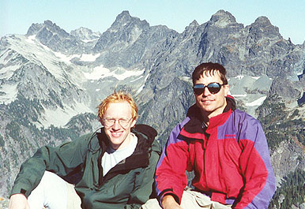
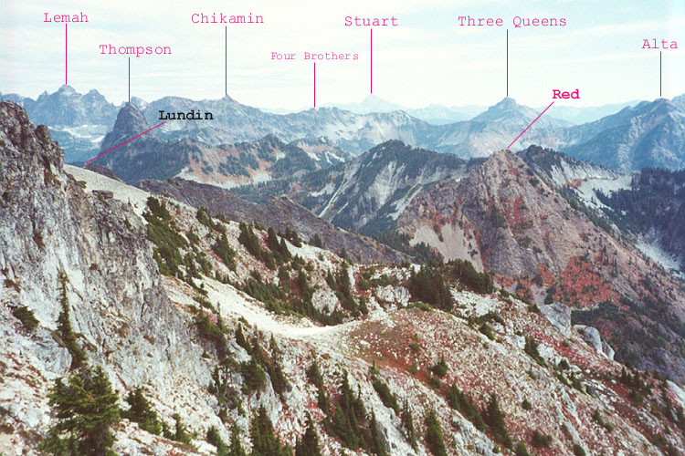
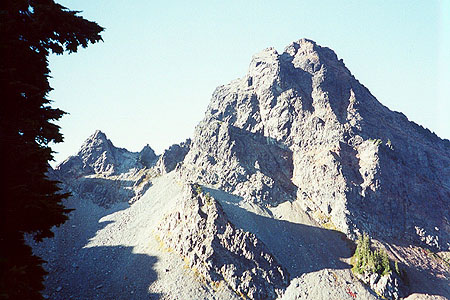
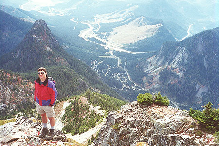
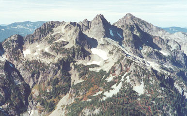

Mount Thompson West Ridge
- Mount Thompson, West Ridge (5.6)
- October, 2000
Well, the weekend began with major confusion and plan changing. Originally, we were heading for the West Face of Sloan Peak, a route Beckey rates as 5.7, something Steve and I felt ready for and very excited about. A week before, I had looked across at this face from Columbia Peak. I was standing there care of a perfect weather forecast, and I knew this well. Too many times I’ve ventured to the Monte Cristo area only to come home soaked and summit-less, while friends scaled a Snoqualmie area summit in sun!





Because of this, and a rainy forecast for Sunday, we changed our plans to climb Mt. Thomson on Saturday, then do something else on Sunday. We arranged to meet Dan at the pass, but due to concerns about finishing the route, we couldn’t wait for him to arrive at 8 am. I was bummed about not getting to climb with him for the first time, but he ended up soloing the West Ridge of Stuart that day and having a fantastic time alone. (Some of you may have read about the climb Steve and I did last year. Looking back, my writing about that seems overwrought, especially since most others who have done that climb found it quite casual. But I won’t change the text since to us at that time, it was like a mini-epic. It reminds me of who I am: a weekend bumbly who goes out and learns the hard way!)
So anyway, Steve arrived early, and we walked the trail up to the Kendall Katwalk, using my shortcut on the old Commonwealth Basin trail. With light packs, we made good time, talking about work and climbing. Steve had joined a climbing gym, and took a lesson from Tony Yaniro. Kris was later forced to endure my lectures that started with “Tony Yaniro sez…,” thanks to this conversation! When in doubt, I just ask myself “What would Tony Yaniro do?” ;)
I love the trail just after the Katwalk, it meanders among boulders, heather and friendly campsites. We got water at Ridge Lake, then climbed over Bumblebee Pass, getting an excellent vantage on our climb of the West Ridge, and the descent down the east side. It took quite a while to descend into this hidden valley and hop boulders up the other side to the base of the route. But it was a pretty place, and there was a nice breeze. In fact, once on the ridge-top, the breeze was fairly cold, causing us to climb in our jackets the whole way.
We passed a small tower on the ridge’s north side with scrambling, coming to a tiny notch. Steve took the first pitch, starting with an exposed step-across move. Carefully but surely, he climbed, gaining the ridge crest after 50 feet of climbing on the north side. After a time, the rope came tight and I began climbing. I’d have to say that the rock on this mountain is merely ok. As in, not dangerously loose, but occasionally (and predictably, that’s important) loose. But the first pitch probably has the best rock.
Steve handed me the rack, and I started up a steep pitch via a short chimney. I continued vaguely on the ridge-crest. I hadn’t seen any sign of passage, but there was never any danger of getting off route. It was just me, the wind and the rope for a while. Eventually, I came to a very steep and blocky section, characterized by licheny, loose rock. I was surprised to look down between my legs and see Steve far below, since I hadn’t realized how steep the climb was. A short overhanging section brought me to a belay stance at the base of a short wall. The view was excellent!
Steve arrived, and tackled the wall via a short but clean crack and face. After rehearsing a few boulder moves, he committed to the face and was soon out of sight. Easier ground followed, since the rope ran out very quickly. He brought me up to an awesome expansive slab and a belay on the ridge-crest. I took a long pitch up from there to the false summit. We scrambled to a notch, then climbed 40 feet steeply to the summit. It was a year since I had visited. What a great place to be on a nice day!
We put the rope away and scrambled carefully down the 4th class section. Last year, there was a short fixed line to make this more secure, but it was gone. Another party elected to rappel here, but careful down-climbing worked for us. Then it was a long scramble and hike down into the basin. It was late afternoon when we landed on the Crest Trail, facing the 6 mile walk out.
We had a companion who came down from the summit with us, and the three of us walked for hours, sometimes in complete silence on the empty trail. It was very peaceful. It became dark in the last mile, and we reached the car around 9:00 pm.
Steve and I weren’t sure what to do next, we only knew we wanted another climb the next day. Realizing how close we were to town, I suggested repairing to my place for the evening. “Okay!” said Steve.
We were happy to sleep in warm beds, and Kris was very happy to see me for the evening. Steve got to meet Marco, and we had a nice dinner.
The next morning I felt pretty bad. I had developed a cold Thursday, and now I was feeling woozy. Steve and I were also tired from Mt. Thompson. So after talking about things like the NE Buttress of Chair Peak, we eventually dropped the heavy gear at the car and hiked up Snoqualmie Peak. Feeling quite tired, this was actually more than enough for us both! But the view looking steeply down to Alpental was excellent. We thought about scrambling to the pointy sub-summit, but didn’t. I took a short nap, dreaming in an Actifed-induced haze.
We looked over to Mt. Stuart, and thought of Dan over there, possibly looking back here. Weather was moving in, and it was time to go home. Thanks to Steve for a fun time!